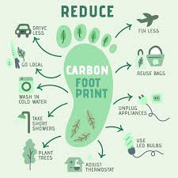
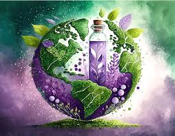

Welcome to the Sustainable Farming Tracker
Helping you adopt eco-friendly farming practices
Explore Sustainable Practices
 
Track Your Sustainability Metrics
Water Usage (Liters):
Animal Welfare Score (0-100):
Calculate Environmental Impact